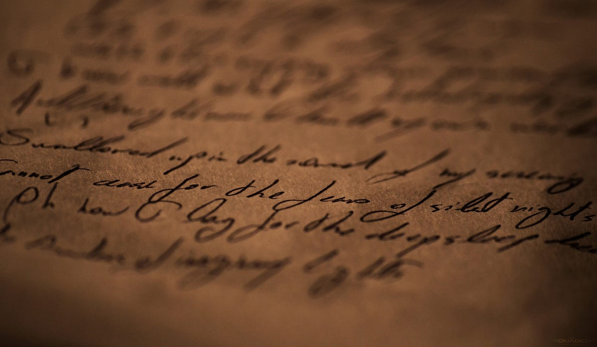
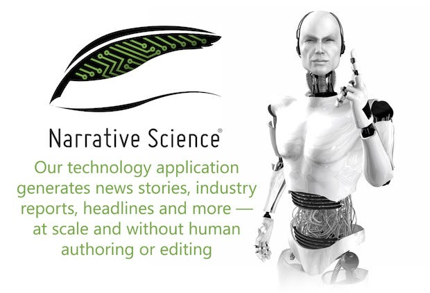
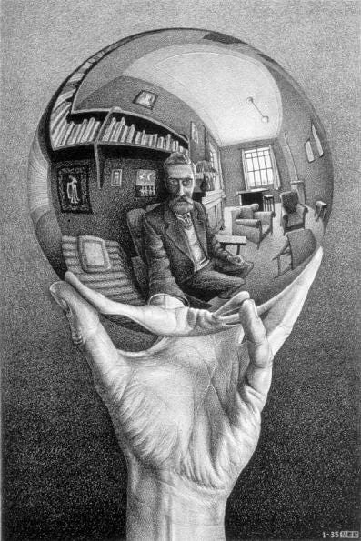

Il giorno in cui i robot iniziarono a scrivere

Si può scrivere un testo senza… scrivere?
Scrivere è un atto personale. Può anche essere piuttosto faticoso, sia per la mente che per il corpo, come ci ha insegnato Leopardi. Di conseguenza, a volte consideriamo benvenute le soluzioni che mitighino questo onere che divide il nostro pensiero dalla sua espressione su carta (o su schermo).
Scrivere senza scrivere. Non mi riferisco alla scrittura automatica di un medium in trance. Non mi riferisco neanche ai sistemi di riconoscimento vocale. In questa epoca di miracoli tecnologici — veri e presunti — emerge un’ambizione più alta: vedere su una pagina un testo che ci rappresenta così bene da esserne gli autori, senza che si sia pensato di scriverlo. In giro per il mondo si stanno sviluppando esempi di scrittura automatizzata. Forme di intelligenza artificiale si sostituiscono allo scrivente (scrittore è parola di maggior spessore che non potrà mai essere sostituita. Forse).
Dai numeri alle parole

Forbes si affida per alcuni suoi articoli a Narrative Science. Sulla base di dati su imprese, quotazioni di borsa, parametri economici, i computer di Narrative Science producono articoli che diano una forma testuale ai dati. I clienti di Narrative Science sono diversi, tipicamente imprese che hanno necessità di elaborare enormi masse di dati, come banche e imprese finanziarie. I prezzi possono essere di $10 per un articolo di 500 parole. Prezzi che però variano molto a seconda di tipologia di articolo e cliente. Dai Big Data ingestibili per una mente umana, sorgono testi in grado di spiegare quei dati a un lettore. La Associated Press impiega i software di Automated Insights per generare articoli sul basket universitario che prima non copriva. Nel 2014, un giornalista del Los Angeles Times si è affidato a un software per scrivere un articolo su un terremoto poco dopo il suo verificarsi.

La scrittura automatizzata può estendere il ruolo delle content farm. Una content farm si affida a scrittori umani per produrre notevoli masse di contenuto che possano soddisfare i requisiti degli algoritmi di ricerca del Web al fine di ottimizzare la diffusione di un testo. Se una content farm potesse impiegare esclusivamente computer per scrivere i contenuti, l’efficienza potrebbe crescere notevolmente, in quanto un computer potrebbe elaborare più informazioni e scrivere più articoli di un essere umano. Le content farm sono spesso criticate per la loro produzione di contenuto che, pur di attirare gli algoritmi di ricerca, equivale a spam. Altra critica collegata è il superamento del confine fra contenuti originali (come quelli giornalistici) e contenuti marginali e non affidabili simili al churnalism. Content farm potenziate dalla scrittura automatizzata e in grado di sfornare più articoli intensificherebbero la discussione sulla qualità dei loro contenuti e sul concetto stesso di contenuto.
La visione di Robbie Allen, CEO di Automated Insights, è all’opposto della creazione di un contenuto sovrabbondante che riempia ogni angolo del Web. La sua azienda, invece di singoli articoli da milioni di visualizzazioni, intende generare milioni rapporti e testi indirizzati al singolo richiedente: il CEO che vuole capire dei dati di mercato, il giocatore di fantasy football che vuol leggere una cronaca di una partita. In questa ottica, la scrittura automatizzata si tratta di un supporto al processo decisionale.
Leggere la scrittura automatizzata


Evgeny Morozov si chiede se la scrittura automatizzata non rappresenti non tanto un rischio per la professione giornalistica, ma una testualità nuova in cui il testo potrà cambiare automaticamente a seconda di chi lo legge. Ad esempio, se sono un lettore di gialli, quando clicco sul titolo di un articolo su un’impresa per leggerne il contenuto, l’articolo potrebbe prendere forma di una storia con toni da mistero o polizieschi. Se ho invece acquistato un tablet, l’articolo potrebbe citare e illustrare i collegamenti fra l’impresa e l’industria elettronica. (Si verificherebbe qualcosa di simile a una forma di quantum storytelling). Morozov porta questo scenario nel futuro. Invece della piccola Narrative Science, potrebbe essere Amazon a produrre articoli automatici. Anzi, interi libri che siano un compendio di altri libri. Un digest perfettamente ritagliato sul nostro stile di lettura in termini di vocabolario usato, tono, lunghezza delle frasi e contenuti. In un simile mondo, non saremmo più in grado di uscire dalla nostra bolla informativa. La bolla informativa diventerebbe testuale, impedendoci di leggere testi che non siano esattamente dentro il piccolo mondo di storie che desideriamo e a cui siamo abituati. La nostra storia si rispecchierebbe in migliaia di storie scritte da un computer in grado di individuare esattamente cosa e come scriveremmo noi. La nostra unica lettura sarebbe scritta da noi, senza saperlo.
Narrativa automatica
I sistemi di scrittura computerizzati si basano oggi su dati numerici. Estraggono un senso da numeri e li confezionano in storie. Non sono una sfida per la scrittura narrativa, che si fonda su idee, sensazioni, creatività, umanità tutta dello scrittore. Ma sarà sempre così? È possibile immaginare una narrativa computerizzata che affianchi quella classica? Per ora, i computer possono dare una mano allo scrittore. Alla City University di Hong Kong si testa un software che è in grado di suggerire parole a uno scrittore che stia scrivendo un testo. I termini suggeriti sono basati sull’elaborazione di componimenti in cinese tradizionale della dinastia Yang.
Tecnologia come ausilio alla scrittura creativa e narrativa, non una sua sostituzione. Un po’ come i dizionari, che assistono chi scrive, ma non ne sono certo un surrogato. Tuttavia, la stessa provocazione che in futuro possa esistere una forma consolidata di narrativa automatizzata impone una riflessione di tipo non tecnologico, bensì umanistico. Il concetto di autore è storicamente definito, anche in base alle tecnologie disponibili. Gli amanuensi medievali erano a loro modo autori (almeno nel senso di produttori tecnici del testo), anche se erano all’opposto del concetto di autore moderno, dato che replicavano testi preesistenti considerati eterni e non si permettevano certo di introdurre elementi originali. La tecnologia di scrittura era scarsa e imponeva fedeltà al testo. Al contrario, oggi siamo inondati di testi. Tuttavia l’effetto è ancora una volta una rivisitazione del concetto di autore. Autore che si perde negli esperimenti di scrittura collettiva o nei momenti in cui il flusso di una storia e i commenti, risposte, incisioni di altre persone diventano un unicum in cui l’autore è solo l’incipit di un processo più ampio.
Forse in futuro leggeremo una toccante poesia che ci farà meditare. Poi scopriremo che è stata scritta da un’intelligenza artificiale, magari sintetizzando in modo sorprendente miliardi di parole e sospiri umani, mostrandosi quindi intelligenza collettiva. Quel giorno grideremo all’impostura o celebreremo la nascita di una nuova era? Un nuovo autore?